Introduction
Le premier jour a été dédié à la découverte d'Épitech .Nous avons reçu nos emplois du temps et avons été informés sur le déroulement de la semaine.

le 2ème jour le matin nous avons eu une conférence sur la cybersécurité et l'après-midi nous avons fait le portfolio et un jeu qui se nomme Osint .
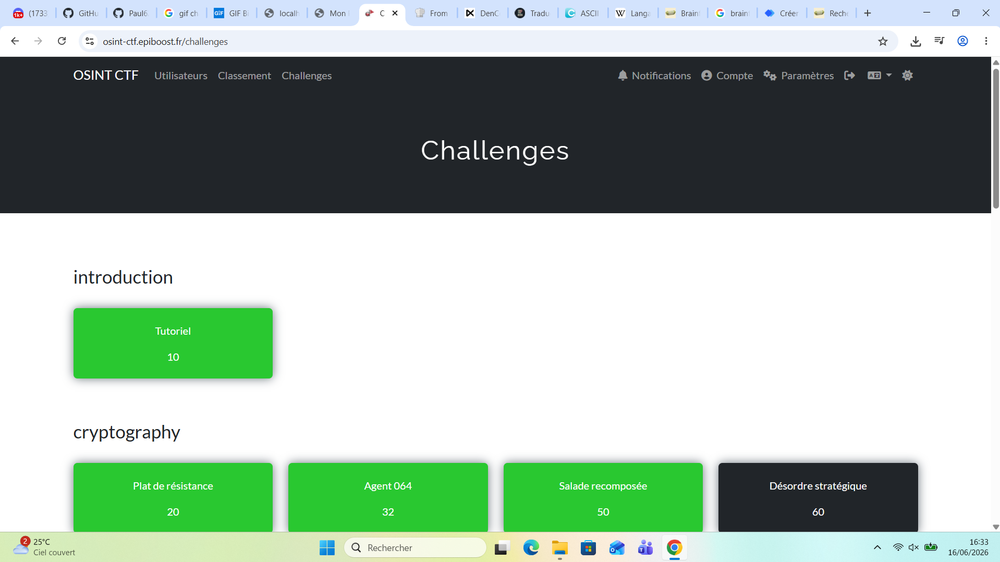
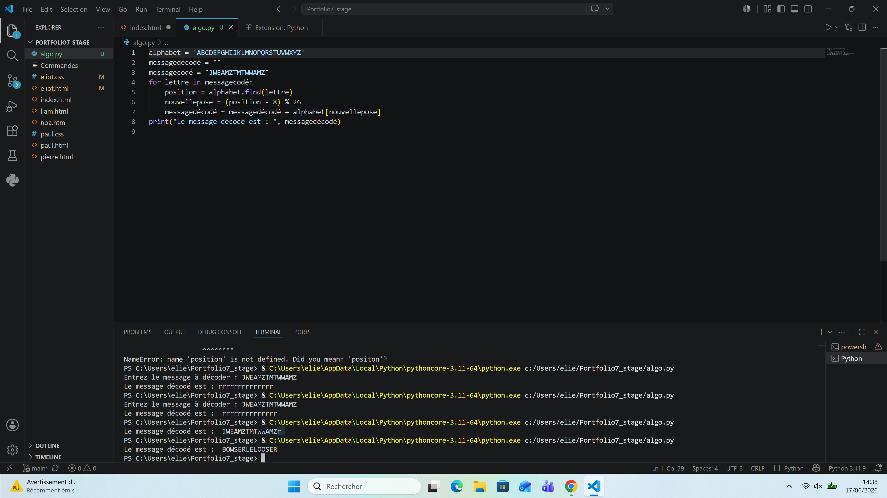
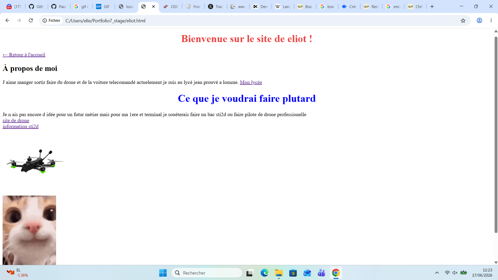
Mercredi 17 le matin une conférence sur l'IA et le jeu poké poireau et l après midi de l algorithmie
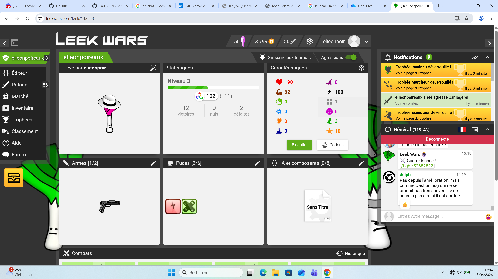
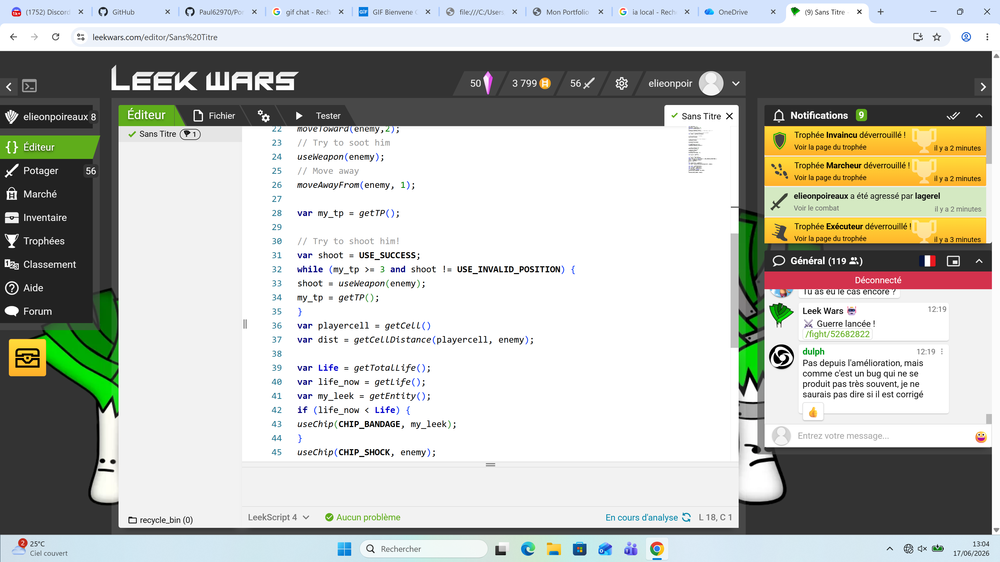
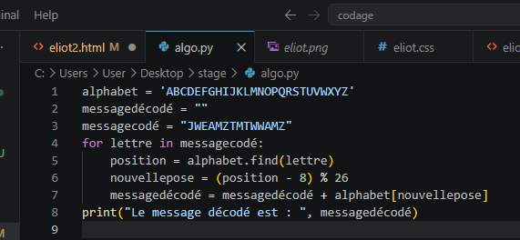
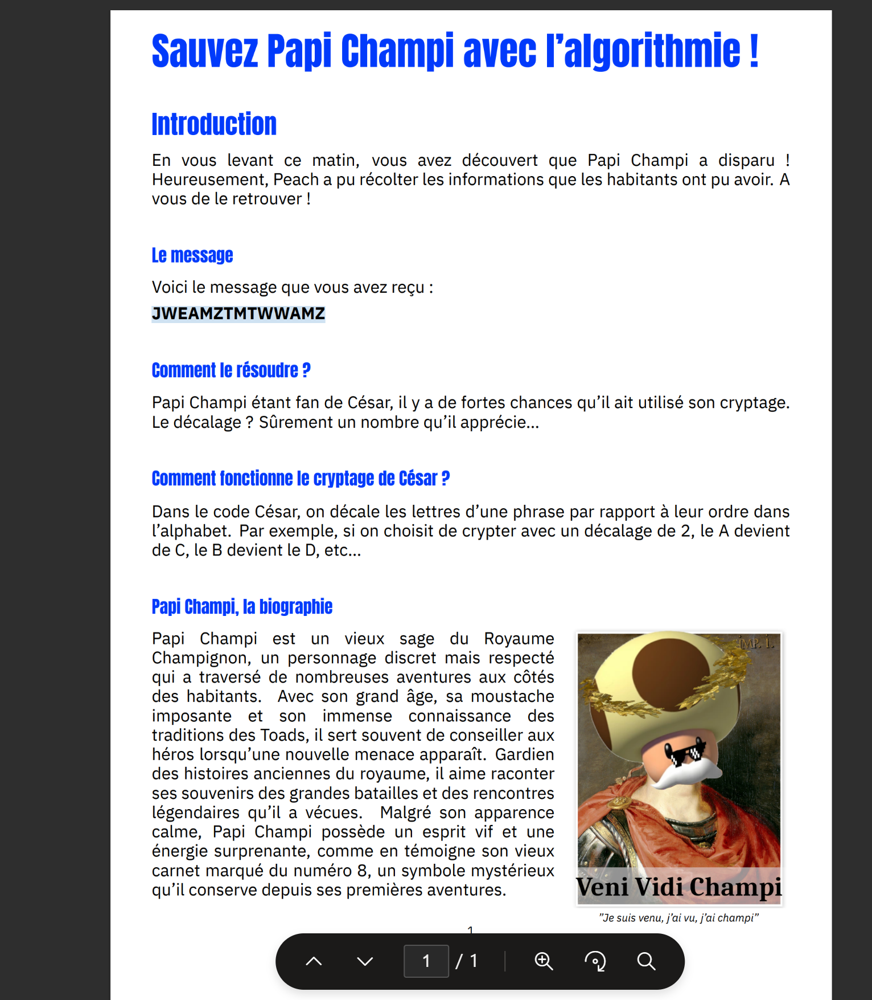
Jeudi 18 le matin une conférence sur notre avenir et savoir apprendre à s adapter et le jeu Légo où il fallait faire des canards et l après midi du Arduino
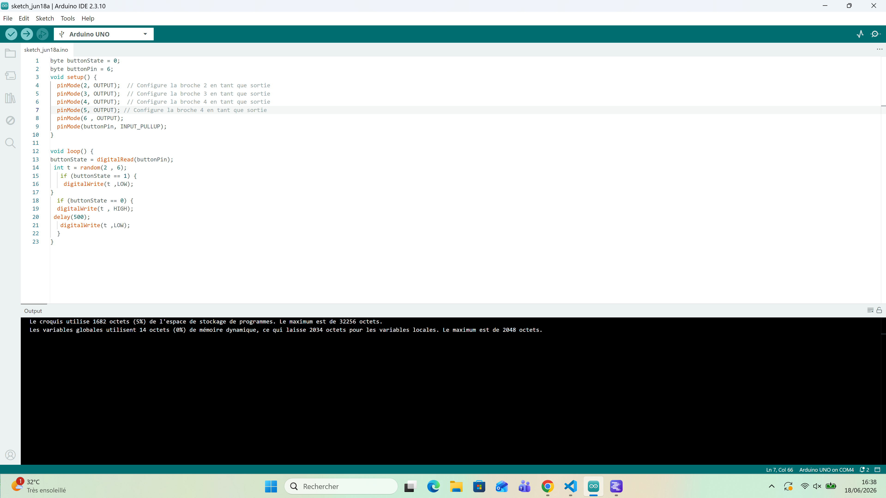
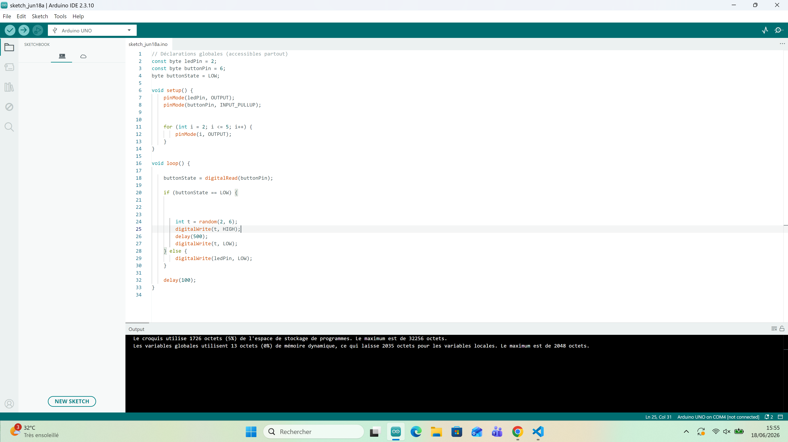
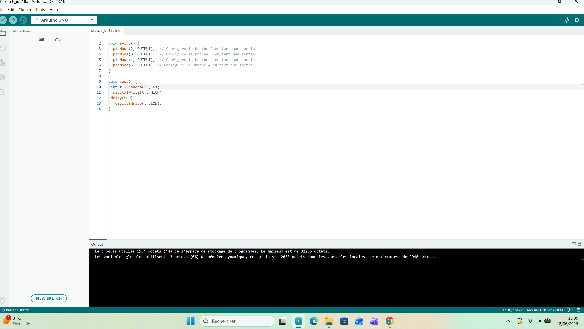
vedredi 19 le matin une conférence sur l IA et le reste de la journée sur le portfolio
lundi 22 le matin une conférence sur les métiers. Les étudiants nous ont montré les démos de leur projet et l après midi sur le portfolio
mardi 23 le matin une conférence sur l IA présentée par une personne de Google et une activité d organisation en rapport avec la NASA et l après midi un morpion IA
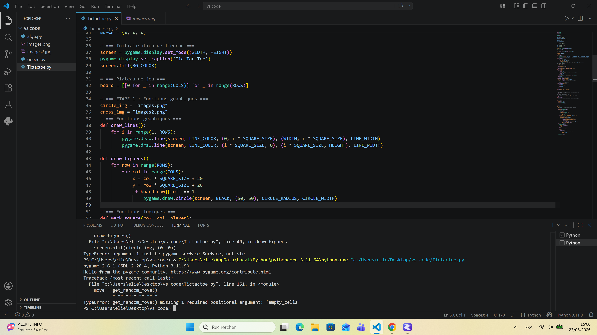
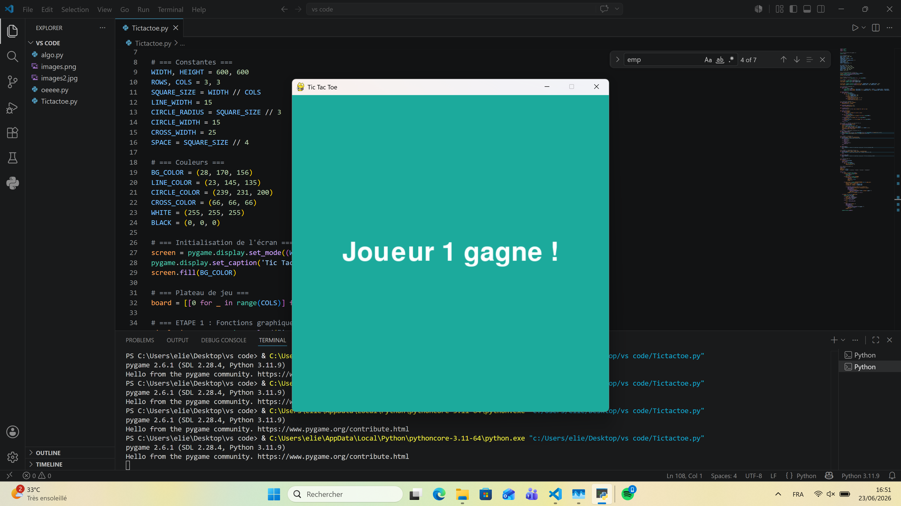
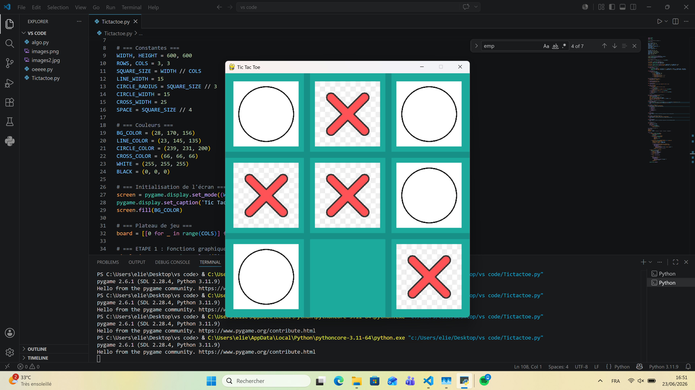
mercredi 24 le matin une conférence sur les métiers de la cyber et des jeux vidéo et l après midi un snake en js
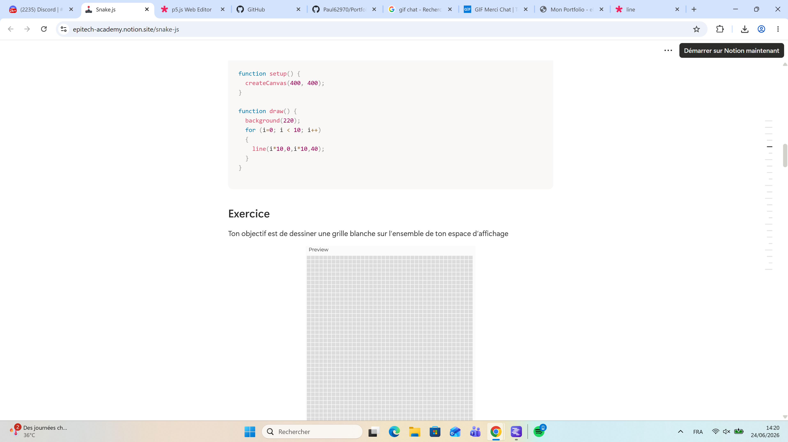
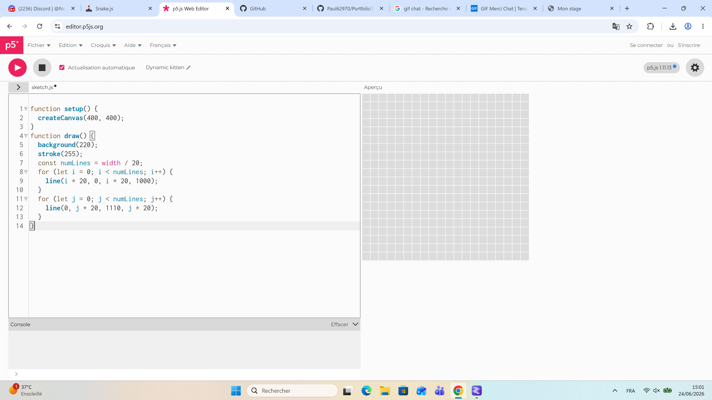